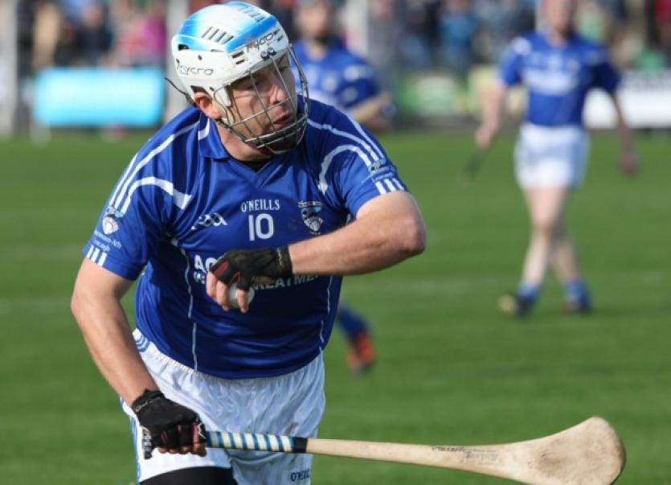
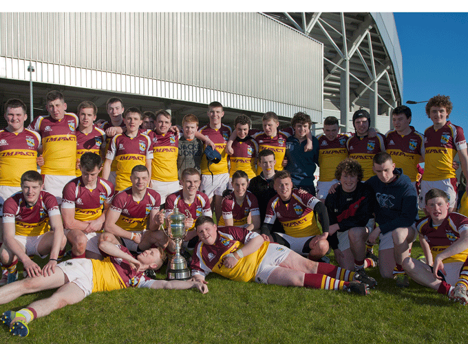
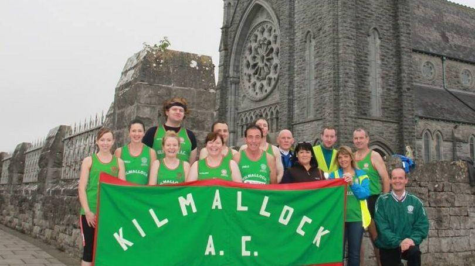

We have worked with many different teams and clubs and groups over the years to provide the best gear and to make sure our teams are kitted out well. We have great pride in joy working with these groups and love meeting up with them at every game, run and gym session. I would love to work with more people so you can also experience what its like with the Breezy Family.

Dromin Athlacca is one of the clubs we are working with. Dromin Athlaaca Gaa is a limerick based hurling and football club which have had various successes over the years. We started to work with them back in 2015 and have never been prouder of what the club has achieved. with foundraisers and events we helped to club organise, they have now built a gym facility and also a astroturf 7-a-side field within to clubs grounds. Here is a quote from the man in the photo, Paul Neenan:
"With the leadership of Breezy we now have a gear deal which provides us with the best training gear in all of Limerick. Our partners at Breezy are brilliant when it comes to being just invovled with the club have staff coming to games supporting us and all. We love having Breezy as part of the team!!"

We have been working with Bruff Rugby Club for over three years now and find them an absolute joy to work with. Everyone in the club is unbelievable dedicated to the teams pursuit of rugby greatness in the munster area. We help provide jerseys for the field and active wear for there gym sessions. We love going to watch our boys on there path the victory every step of the way. Here is a quote from a man called John Shehaen:
"Breezy are an unbelieveable company to work with. There quality of gear and involvment is second to none. We as a team find it amazing that somehow there is a work at Breezy that goes to every game of ours supporting us on and always has our backs. Breezy we love you and would not know what to do without you now."

We have only joined up with Kilmallock Athletics Club over the last year. Some of our workers are part of this club now and are deeply involved in our links with the club. We provide gear and we help run events for the club and our staff love to work with the club with its ties to the town we work in. Here is a quote from a fellow Breezy employee and Kilmallock Athletics member Shauna Maguire:
"I know as I work with Breezy it might sound biased, but I mean it when I say it, Breezy is unbelieveable. The way Mikey has the company so invovled and helping out clubs such as the Kilmallock Athletics Club is unreal. He goes out of his way to go to every event and the every fundraiser and every run is amazing. We provide gear to the club which is of high quality and comfort. we love Breezy at the club and I love working for Breezy."